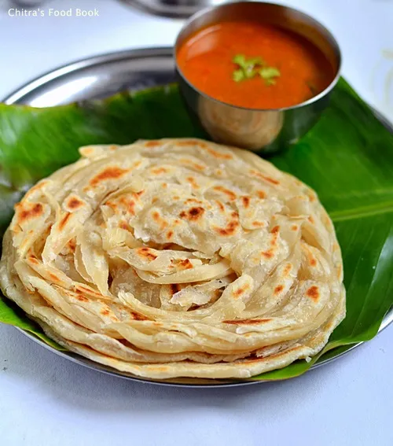

parrota
Prep Time: 40 minutes
Cook Time: 15 minutes
Servings: 4
Ingredients:
- 2 cups Maida (All-purpose flour)
- 1 tbsp oil
- Salt to taste
- Water as required
- 2 tbsp ghee or oil (for cooking)
Instructions:
- Mix maida, salt, oil and enough water to form a soft dough.
- Let it rest for at least 30 minutes.
- Divide dough into balls, roll and stretch them, coil and flatten again.
- Cook each parotta on hot tawa with ghee/oil till golden brown on both sides.
- Serve hot with salna or kurma.